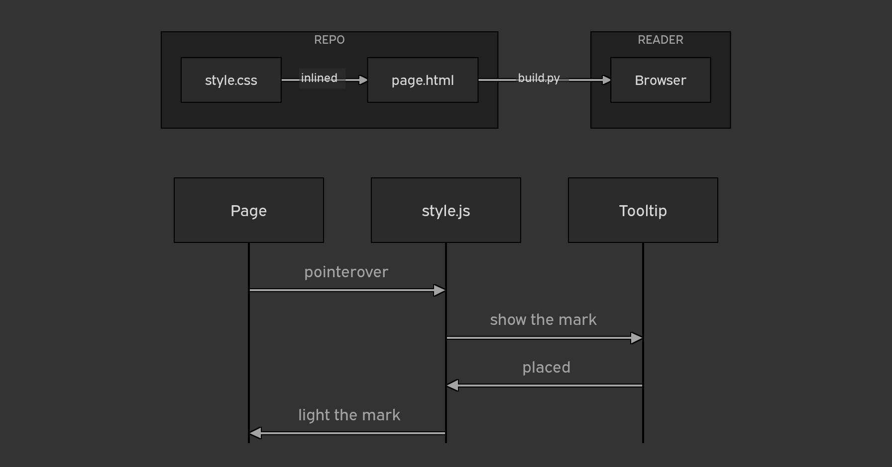
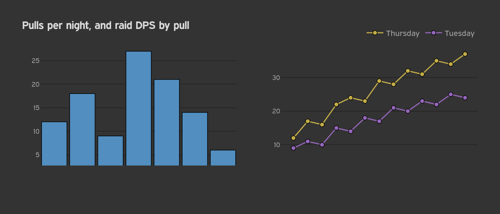

Design system · draft 1
Raid performance report
Seven sizes, seven spacings, one border. Dark gray surfaces, black ink, a tan accent, flat fills.
Text
Prose runs at 18px on a 30px line, a shade dimmer than headings, and stops at 560px. Headings wear the outline ElvUI draws; running text stays plain. Bold marks emphasis; nothing is italic. A struck value was replaced: two three healers.
A highlight colours the name of a thing: Tukz topped the meter, and 24 pulls went into Dimensius.
Lists
- Lists use square markers.
- Items sit 8px apart.
- A nested list indents one step.
- It keeps the same marker.
- Three levels is the limit.
- The list picks up again after a nested one.
- Numbered lists are for steps and ranks.
- Numbers are dim, not faint: they are read.
- Nested steps use letters.
- They indent one step.
- The count picks up again after a nested list.
Quote
Wipe it. We go again with two healers, and this time nobody stands in the fire.
Tukz, raid lead
Maths
Maths sits in the text face with real exponents. Enrage damage doubles every 30 seconds: after t seconds the boss hits for 2t/30 times its opening damage.
1.2M·2t30
Inline code and blocks use a monospace face:
python3 scripts/build.py report.html-- Skin a status bar the ElvUI way.
local BORDER = { 0, 0, 0, 1 }
function E:SkinBar(bar, texture)
bar:SetStatusBarTexture(texture or "Melli")
bar.backdrop:SetBackdropBorderColor(unpack(BORDER))
if not bar.text then
bar.text = bar:CreateFontString(nil, "OVERLAY")
bar.text:SetFont("Expressway", 14, "OUTLINE")
end
return bar, true
endIcons
Beside a subheading
Callouts
Dashboard
| Boss | Pulls | Best | State |
|---|---|---|---|
| Plexus Sentinel | 1 | Kill | |
| Loom'ithar | 3 | Kill | |
| Forgeweaver Araz | 11 | 18% | |
| Dimensius | 24 | 61% | |
| Nexus-King | 0 | Locked |
Charts
Assigned in this order; a seventh folds into "other".
More charts
The white tick marks the 4.30M target.
Right of the middle is a gain, left a loss.
Not there yet
A dashed line or a hatched fill marks what is not there yet: a forecast, a goal, a planned part. A word beside it says which.
Context and notes
Gray keeps a series as background. A rule marks a moment, a band a period, and a tone of the series colour a range.
| Measure | Was, now |
|---|---|
| Healers | |
| Deaths a night | |
| Enrage wipes | |
| Raid DPS |
Explainers
- Week 9Plexus Sentinel dies
First night, one pull. - Week 10Loom'ithar dies
Three pulls. - Week 11Stuck on Forgeweaver Araz
Eleven pulls, best 18%. - Week 12Eight of eight
With a night to spare.
- Repair
Gear above half durability. - Eat and flask
Buffs last the whole night. - Assign interrupts
Two players per cast. - Ready check
Pull on the count of five.
Skipping 3 cost two wipes on Dimensius; 1 and 2 take five minutes together.
- Health
- 1.84B
- Enrage
- 9 min 30 s
- Phases
- 3
- Best pull
- 61% left
- Pulls so far
- 24
- Swap one healer for a third Mage.
- Start at 19:30 to fit two more pulls.
- Tanks trade at three stacks, not four.
- Nobody stands in the fire.
37 deaths a night, and the enrage hit on every Dimensius pull.
21 deaths a night. Damage fell 4%, and the boss still died.
The tank opens with everyone alive.
Three players die to the first fire. The boss is on schedule; the raid is not.
Six players cannot finish the last 8%. The wipe was set up in 2.
1 / 3Each healer adds healing, cuts deaths and costs damage. Drag to see the trade.
- We need more damage.False
Damage was 4% over the check. Deaths ended the pull.
- A third healer costs damage.True
About 4%, and the boss still died.
- The enrage timer is the problem.Partly
It ends pulls, but only after early deaths slow the kill.
- Portrait. Who the frame belongs to.
- Health. Green while safe; it empties to the left.
- Power. Mana, rage or energy, under the health bar.
In the prose
Some parts of an explainer live in the text itself. A margin note keeps an aside out of the reader's way. A disclosure holds depth that only some readers want.
Why three healers and not four?
A fourth healer costs another 4% damage, and at that point the boss outlives the enrage timer. Three is the most the damage check allows.
Hover a name. The tank opens the pull, the healers keep the raid alive, and the damage dealers race the timer.
Film
A film is a figure that plays one beat at a time. Each beat is one sentence and one change, and the reader sets the pace.
- A square plus ten of its sides makes 39. The dashed boxes are not drawn yet.
x2is the square itself: x wide and x tall.10xis a strip: just as tall, and 10 wide.- Together they cover 39. Find the side x and the puzzle is solved.
Controls
| Player | Class | Damage | Deaths |
|---|---|---|---|
| Damage dealers | |||
| Ellesmere | Mage | 4.92M | 4 |
| Tukz | Warrior | 4.48M | 6 |
| Melli | Warlock | 4.13M | 3 |
| Tanks and healers | |||
| Elv | Paladin | 3.54M | 9 |
| Simpy | Priest | 0.92M | 2 |
| Total | 17.99M | 24 | |
Numbers and dates
A number is written one way everywhere on a page. The left column is the form to use.
| Kind | Write | Not | Rule |
|---|---|---|---|
| Small count | 1,284 | 1284 | Whole digits with a comma, up to 9,999. |
| Large amount | 41.8M | 41,800,000 | Three figures and K, M, or B from 10,000 up. |
| Column of amounts | 4.92M, 0.28M | 4.92M, 280K | One unit and one precision down a column. |
| Percent | 6.4% | 6.4 % | No space before the sign. One decimal at most. |
| Unit | 25.9B km | 25.9Bkm | A space before a unit that is a word. |
| Change | +6.4%, -3.1% | 6.4% | A change always shows its sign. |
| Change in a share | +4 pts | +4% | Points between two percentages. |
| Range | 12 to 31 | 12-31 | "to": a dash reads as a minus. |
| Ratio | 8 / 8 | 8/8 | A space each side of the slash. |
| Rough value | about 40 | ~40 | A word, outside maths. |
| Duration | 2h 14m, 4m 05s | 2:14:00 | Two units at most, the larger first. |
| Date | 15 Nov 2026 | 11/15/26 | Day, short month, year. No year inside the current one. |
| Time of day | 21:30 | 9:30 PM | The 24-hour clock. |
| Recent time | 3h ago | 180 minutes ago | For anything less than a day old. |
| Date in data | 2026-11-15 | 15.11.2026 | Year first, in code and file names only. |
| No value | – | 0, blank, N/A | A faint dash. Zero is a value: write 0. |
Chart forms
Diagram forms
Technical blocks
A key is a raised chip: press Ctrl K to open the palette. A file is sunken code: build.py.
def softened(hue, share=0.12):
"""Mix a pure hue toward mid gray."""
gray = oklab("#707070")
lab = oklab(hue)
return mix(lab, gray, share)
:root {
--accent: #c69b6d;
--accent: #bb966e;
--gold: #c3ad48;
}
$ python3 scripts/build.py report.html
inlined style.css and style.js
embedded 2 fonts
wrote report.html, 412 KB
$ npm test
PASS build.test.js
FAIL icon.test.js
expected 24, got 16
SKIP fonts.test.js- skills/guide/
- SKILL.mdThe rules
- assets/
- style.cssTokens and components
- style.jsBehaviour
- scripts/
- build.pyInlines a page
- examples/
- showcase.htmlEvery component
Why does the forecast line pop in late?
The clip-path keyframe has only a start. A clip cannot blend from a shape to none, so the line stays hidden for half the time and then shows at once.
Giving the keyframe both ends fixes it.
Do that.
Data states
A panel says what state its data is in, in a word. Data that is not there wears the dashed frame.
Updated 3h ago. The next refresh is at 21:30.
Sunday is still running: 6 pulls so far, about 14 expected.
Domain colours
Where a subject has colours its readers already know, those stand in for the series colours. Players take their class colour, and an item's name takes its quality colour: Voidglass Kris, Loomweave Cord, Fyr'alath.
Class
Item quality
App controls
| Player | Class | Role | Damage | State |
|---|---|---|---|---|
| Ellesmere | Mage | Damage | 4.92M | Ready |
| Tukz | Warrior | Damage | 4.48M | Ready |
| Elv | Paladin | Tank | 3.54M | Late |
| Simpy | Priest | Healer | – | Absent |
A toast, as it shows at the bottom right of the window:
Decisions
- About 20 more pulls a week on Dimensius.
- Thursday's progress no longer cools off by Tuesday.
- Room to bring the bench in.
- Four of 20 raiders cannot make Sunday.
- Flask and repair costs rise by half.
| Warcraft Logs Pick | Details export | Hand-kept sheet | |
|---|---|---|---|
| Data for each pull | Yes | Yes | No |
| Readable after the raid | Yes | No | Yes |
| Free | Partly | Yes | Yes |
| Time to set up | 5m | 20m | 2h |
- Clear HeroicDone
8 / 8 in week two.
- Kill Forgeweaver ArazDoing
Best pull at 18%.
- Recruit a third healerBlocked
No applicant since 2 Nov.
- Kill DimensiusPlanned
After the Araz kill.
Page furniture
Page head
Season 3 · Week 12
Raid report
The eyebrow gives the context, the title names the piece, and the lead states the finding.
Notes and sources
Raid DPS rose 6.4% in the week after the patch.1 Deaths rose with it, most of them on one boss.2 Select this sentence to see the selection colour.
A light picture
Scrollbar
21:02:11 Ellesmere casts Glacial Spike on Dimensius for 412,880 damage, a critical strike
21:02:12 Tukz casts Mortal Strike on Dimensius for 198,420 damage
21:02:12 Melli casts Chaos Bolt on Dimensius for 377,105 damage, a critical strike
21:02:13 Dimensius begins to cast Devour
21:02:13 Elv interrupts Devour with Rebuke
21:02:14 Simpy heals Elv with Flash Heal for 88,300
21:02:15 Azilroka casts Lava Burst on Dimensius for 240,917 damage
21:02:16 Dimensius casts Shattered Space
21:02:16 Tukz dies
21:02:17 Simpy casts Resurrection on TukzPage foot
- Warcraft Logs, guild report for 4 to 10 Nov 2026. Back
- Dimensius, 24 pulls. Deaths to Shattered Space only. Back
Outside the page
Some places take no stylesheet. The look travels as an image, or as a mapping onto what the place offers.


| Place | What it keeps | Send |
|---|---|---|
| README | Markdown and images | Plain Markdown text and tables. Each figure as an exported image. |
| Chat message | Text and one image | The finding in a sentence, then one exported image. |
| Slides in another tool | Images | Each slide exported whole, at 1920 by 1080. |
| Terminal | 16 colours, one face | The mapping above. A state word beside every state colour. |
| Mermaid, plotly, matplotlib | A theme | The tokens, as that tool's theme. Round markers, flat fills, ink edges. |